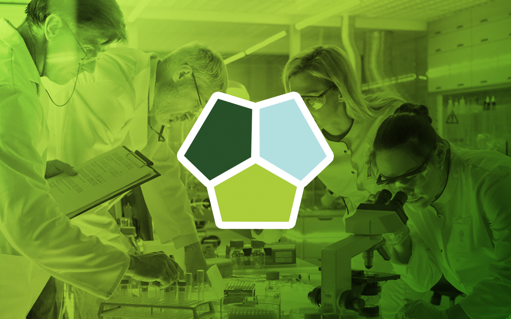

Tricell - We care about Your future!
- Healthcare and Life Sciences: Delivering innovative, customized solutions by combining scientific expertise, business insights, and reporting services.
- Renewable Natural Resources: Driving sustainable and profitable use of renewable resources through focused research and collaborative partnerships.
- Digital Shipping: Empowering the shipping industry through digital innovation, standardization, and efficient, secure, and sustainable solutions.